Introduction
A segmentation divides respondents into groups (segments or clusters) such that respondents within a segment are as similar as possible and respondents in different segments are as different as possible. In market research, segments are typically built on attitudes, needs or behaviours (the clustering variables) and then described with further variables such as sociodemographics or media usage (the profiling variables).
Cluster analysis is the family of statistical methods that finds such groups. Unlike regression, there is no outcome variable that tells us what the “right” answer is: the algorithm only sees the clustering variables and searches for groups of similar respondents. This has an important consequence: a clustering algorithm always returns clusters, even if the data does not contain any groups at all. A large part of a good segmentation is therefore not the clustering itself, but checking whether the clusters are real, how many there are and how well they are separated.
The segmentation functions of YouAnalyser all start with
seg_ and follow the steps of this vignette:
| Step | Question | Functions |
|---|---|---|
| 1. Data preparation | Which variables, how to handle missing values and different scales? |
seg_prep_data(), seg_distance()
|
| 2. Clustering tendency | Does the data contain clusters at all? | seg_clustering_tendency() |
| 3. Optimal number of clusters | How many clusters are there? |
seg_optimal_clusters(),
seg_nbclust_*()
|
| 4. Clustering | Which respondent belongs to which cluster? |
seg_cluster(), seg_cluster_*(),
seg_compare_algorithms()
|
| 5. Cluster validation | How good is the solution? |
seg_validation(), seg_plot_silhouette(),
seg_agreement()
|
| 6. Cluster interpretation | What characterizes the clusters? |
eda_explore(), eda_plot(),
eda_describe(), eda_test()
|
| 7. Assigning new respondents | To which cluster does a new respondent belong? | predict() |
The methodology closely follows the excellent tutorials on datanovia
and the book by Kassambara (2017), and builds on the R packages
factoextra, cluster, NbClust, clValid and fpc. The documentation of each
function (e.g. ?seg_validation) contains more details,
formulas and references.
Getting started with your own project:
ya_setup_folder_structure("mySegmentation", template = "seg")
creates a project folder with a template script
(02_scripts/seg.R) that follows the steps of this vignette
with the recommended settings (hierarchical k-means), from the data
preparation to the export of the segments.
Example data
We use two datasets throughout this vignette:
-
sm_synthetic: synthetic data based on a real study about nutrition (Swissmilk “Milch & Umwelt” 2024). 1,401 respondents rated 20 attitude statements towards nutrition (F50_0_1toF50_0_20, scale 1 = “Stimme überhaupt nicht zu” to 10 = “Stimme voll und ganz zu”). The original study used these items to define four nutrition types (cluster_benchmark). This is what typical survey data looks like: the cluster structure is weak. -
sim_segments: simulated data of 600 respondents on 20 rating items (1-10), generated from three clearly different segments of 200 respondents each (see?sim_segments). The true segment is stored insegment. This data has a clear cluster structure and shows what the results look like when there really are clusters.
Comparing both datasets at every step helps to develop an intuition for what “good” and “weak” results look like.
1. Data preparation
Clustering algorithms group respondents by their
distance: two respondents are close if they gave
similar answers on the clustering variables. Before computing distances,
three decisions have to be made, all of which are handled by
seg_prep_data():
-
Clustering variables (
vars): Only include variables that are relevant for the purpose of the segmentation. Every variable included influences the result, and variables that do not differ between segments only add noise. Variables that are highly redundant (e.g. several items measuring the same thing) give that aspect more weight. -
Missing values (
missing): Distances cannot be computed with missing values, so they are either removed ("omit", listwise deletion), replaced ("mean","median", or a model-based imputation with"mice"), or kept with the Gower distance ("none"). User-defined missing values such as 99 = “don’t know” must be recoded toNAfirst, e.g. withdp_recode_missing(). -
Scaling (
scale): Variables with a large spread dominate the distance. By default, all variables are z-standardized (mean 0, standard deviation 1), so that each variable gets the same weight.
Finally, seg_prep_data() computes the distance
matrix (distance, default: Euclidean distance, the
straight-line distance between the answer profiles of two respondents).
See ?seg_prep_data for a description of all distance
measures and when to use them.
In sm_synthetic, the “weiss nicht / keine Angabe”
answers are already recoded to NA. We use mean
imputation, i.e. each missing value is replaced by the mean of
the respective item:
prep <- seg_prep_data(
sm_synthetic,
vars = starts_with("F50_0_"),
id = "id",
missing = "mean"
)
#>
#> ── Data prepared for cluster analysis ──
#>
#> • Clustering variables: 20
#> • Respondents: 1401 in, 1400 retained
#> • Without any valid answer: 1 respondent removed
#> • Missing threshold: not applied
#> • Missing values: "mean" (0 respondents removed, 778 values imputed)
#> • Scaling: "z"
#> • Distance: euclidean (get_dist)The summary shows that one respondent without any valid answer was removed and that 778 values were imputed. This corresponds to 2.8% of all answers.
How to choose the missing value strategy? Mean
imputation is simple and keeps all respondents, but it pulls imputed
respondents towards the “average respondent” and reduces the variance of
the items. As a rule of thumb, this is unproblematic if only a small
share of the values is missing, often given as less than 5% (Schafer,
1999). With more missing values, prefer missing = "mice",
which imputes values based on the respondent’s other answers, and
combine it with max_missing_prop (e.g. 0.2) to
remove respondents who answered only a few items.
The result is a list with the prepared data (prep$data,
the standardized clustering variables), the original data of the
retained respondents (prep$data_full, used later to
describe the clusters) and the distance matrix
(prep$dist):
prep$data
#> # A tibble: 1,400 × 20
#> F50_0_1 F50_0_2 F50_0_3 F50_0_4 F50_0_5 F50_0_6 F50_0_7 F50_0_8 F50_0_9
#> <dbl> <dbl> <dbl> <dbl> <dbl> <dbl> <dbl> <dbl> <dbl>
#> 1 0.517 0.243 -1.12 1.30 1.82 1.16 1.29 0.554 0.295
#> 2 -0.431 0.729 -0.170 -0.0927 -1.14 0.732 0.174 0.179 0.295
#> 3 -1.85 0.243 -0.170 -1.48 2.67 0.302 -3.16 -0.949 -0.154
#> 4 -2.33 0.243 0.778 -1.48 0.553 1.16 -1.49 0.179 -1.05
#> 5 0.0433 -0.729 -0.644 -1.02 -0.719 1.16 0.730 0.554 -1.05
#> 6 -0.431 0.243 -0.644 -0.0927 0.976 0.302 -0.937 -0.197 -1.05
#> 7 1.47 -0.729 1.25 1.30 -1.14 -1.42 1.29 0.554 -2.40
#> 8 0.517 -0.729 0.304 0.835 -1.14 -0.557 -1.49 -1.70 1.19
#> 9 0.517 -0.729 0.304 0.371 -1.14 0.302 0.174 0.179 -0.603
#> 10 -1.85 -1.22 0.304 -1.95 2.25 0.732 -0.382 -0.949 1.19
#> # ℹ 1,390 more rows
#> # ℹ 11 more variables: F50_0_10 <dbl>, F50_0_11 <dbl>, F50_0_12 <dbl>,
#> # F50_0_13 <dbl>, F50_0_14 <dbl>, F50_0_15 <dbl>, F50_0_16 <dbl>,
#> # F50_0_17 <dbl>, F50_0_18 <dbl>, F50_0_19 <dbl>, F50_0_20 <dbl>We prepare sim_segments in the same way (it has no
missing values):
prep_sim <- seg_prep_data(
sim_segments,
vars = starts_with("item_"),
id = "id",
verbose = FALSE
)2. Clustering tendency
Because clustering algorithms always find clusters, the first
question is whether the data contains any cluster structure at all.
seg_clustering_tendency() compares the actual data with a
random dataset of the same size, in which each variable
is drawn from a uniform distribution within the range of the actual
variable. Random data has no clusters by construction, so it shows what
“no structure” looks like.
Two tools are used:
- Hopkins statistic (Hopkins & Skellam, 1954; corrected version by Wright, 2022). It compares the distance of real respondents to their nearest neighbour with the distance of random points to their nearest real respondent. If the data is clustered, real respondents have close neighbours (inside their cluster), while random points often fall into “empty” space between clusters.
- VAT plot (Visual Assessment of cluster Tendency; Bezdek & Hathaway, 2002). The distance matrix is shown as an image, with the respondents ordered so that similar respondents are next to each other. Small distances are shown in red, large distances in blue. Clusters appear as red squares along the diagonal.
| Hopkins statistic | Interpretation |
|---|---|
| around 0.5 | the data looks like random (uniformly distributed) data, no clustering tendency |
| > 0.75 | clear clustering tendency (Lawson & Jurs, 1990) |
| close to 1 | strong clustering tendency |
Example with a clear structure: sim_segments
tendency_sim <- seg_clustering_tendency(prep_sim)
#>
#> ── Clustering tendency ──
#>
#> • Hopkins statistic, actual data: 1.000
#> • Hopkins statistic, random data: 0.465
#> • Interpretation: data clearly deviates from random data
#> Values close to 0.5 indicate random data, values close to 1 a clustering
#> tendency. With many correlated variables, Hopkins is often close to 1 even
#> without well separated clusters: check whether the VAT plot in `$plot` shows
#> squares along the diagonal.
tendency_sim$plot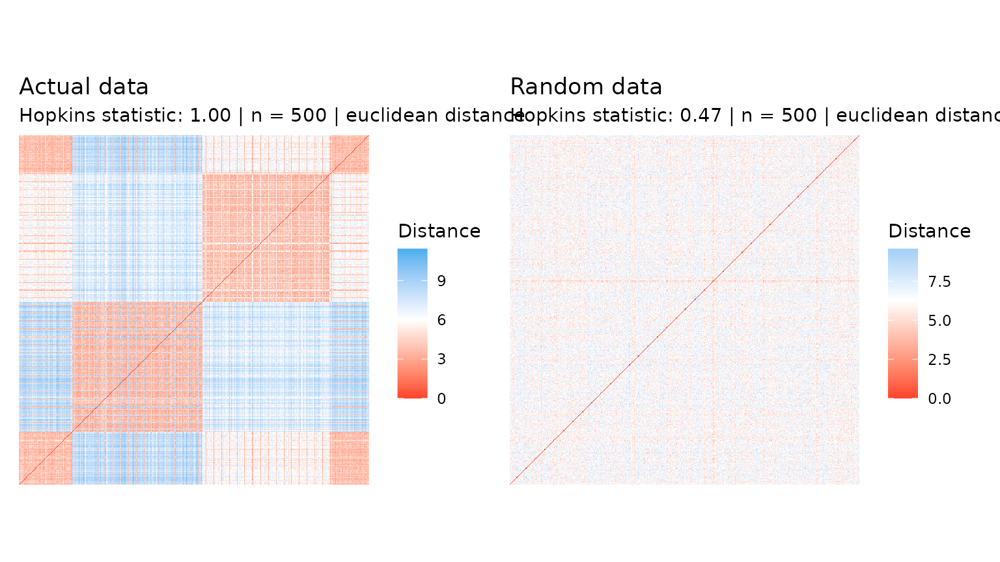
The Hopkins statistic of the actual data (1) is far above the one of the random data (0.47, close to the expected 0.5). The VAT plot of the actual data shows three clear red squares along the diagonal, which correspond to the three simulated segments. The VAT plot of the random data shows no such structure.
Example with real survey data: sm_synthetic
tendency <- seg_clustering_tendency(prep)
#>
#> ── Clustering tendency ──
#>
#> • Hopkins statistic, actual data: 0.983
#> • Hopkins statistic, random data: 0.489
#> • Interpretation: data clearly deviates from random data
#> Values close to 0.5 indicate random data, values close to 1 a clustering
#> tendency. With many correlated variables, Hopkins is often close to 1 even
#> without well separated clusters: check whether the VAT plot in `$plot` shows
#> squares along the diagonal.
tendency$plot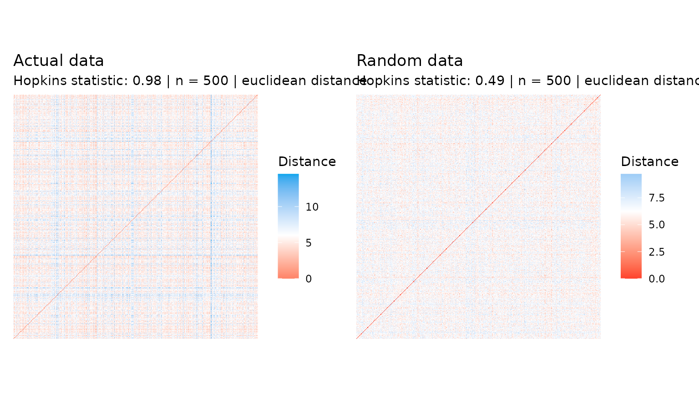
The Hopkins statistic (0.98) is again far above the threshold of
0.75. However, the VAT plot looks very different from the one of
sim_segments: there are no clearly delimited squares, only
a gradual transition from red to blue.
This illustrates an important limitation of the Hopkins statistic: it measures whether the data deviates from uniformly distributed data, not whether it contains well separated groups. Survey data with many correlated rating scales is never uniformly distributed (answers concentrate in certain regions, e.g. many respondents agree with several related statements), so the Hopkins statistic is almost always close to 1. Always look at the VAT plot as well. If it shows no clear squares, as here, the segments that we will find are not “natural” groups, but a useful way to divide a continuum of respondents into types. This is very common in market research and does not mean that the segmentation is useless, but it should be communicated accordingly (e.g. “respondents can be described by four types” rather than “there are four distinct groups”).
3. Optimal number of clusters
Most clustering algorithms need the number of clusters k as
input. seg_optimal_clusters() runs four common methods to
suggest k (Kassambara, 2017). All of them cluster the data for
k = 1 (or 2) to 10 and evaluate each solution:
- Elbow method (WSS) (Thorndike, 1953): The total within-cluster sum of squares (WSS) measures how compact the clusters are, i.e. how far respondents are from the centre of their cluster. WSS always decreases with more clusters, so its minimum is meaningless. Instead, look for the “elbow”: the k after which additional clusters only bring small improvements.
- Average silhouette width (Rousseeuw, 1987): For each respondent, the silhouette width compares the average distance to the members of its own cluster with the average distance to the members of the nearest other cluster. It ranges from -1 to 1; high values mean that respondents are much closer to their own cluster than to the next one. The optimal k maximizes the average silhouette width. It is explained in more detail in Section 5.
- Gap statistic (Tibshirani et al., 2001): Compares the WSS of the data with the WSS expected for random data without clusters (as in Section 2). The gap is large when the clusters are much more compact than in random data. The optimal k is the smallest k whose gap is within one standard error of the first local maximum. In contrast to the silhouette, the gap statistic can also suggest k = 1, i.e. no clusters.
- NbClust (Charrad et al., 2014): Computes up to 26 different indices proposed in the literature (e.g. the Calinski-Harabasz index or the Davies-Bouldin index), each of which proposes its own best k. The optimal k is the one proposed by most indices (majority vote).
Example with a clear structure: sim_segments
optimal_sim <- seg_optimal_clusters(prep_sim, verbose = FALSE)
optimal_sim
optimal_sim$plot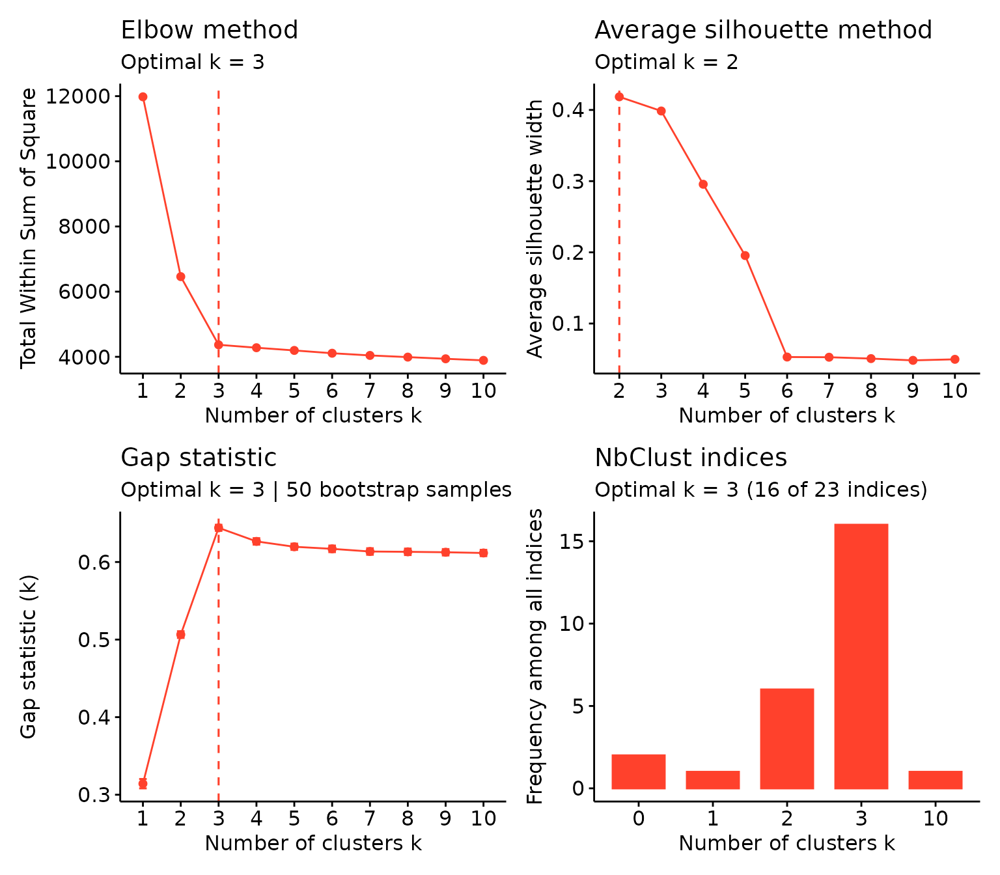
With a clear cluster structure, the methods largely agree: the WSS curve shows a sharp elbow at k = 3 (from k = 3 onwards, adding clusters hardly reduces the WSS), the gap statistic and the majority of the NbClust indices also suggest k = 3.
The average silhouette width suggests k = 2, with k = 3 as a close second. This is a known tendency of the silhouette: it often favours few clusters, because merging two clusters can increase the distance to the nearest other cluster. Always look at the whole curve, and not only at its maximum.
Example with real survey data: sm_synthetic
optimal <- seg_optimal_clusters(prep, verbose = FALSE)
optimal
optimal$plot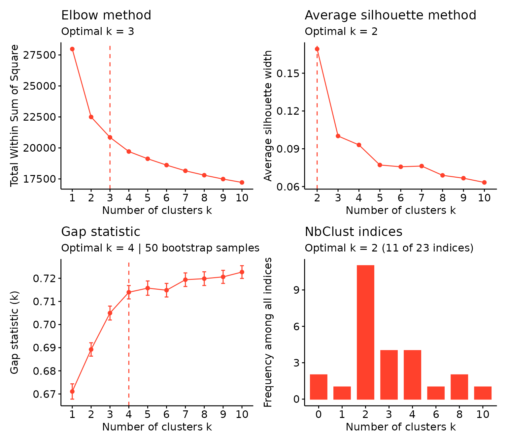
With the weak structure of sm_synthetic, the methods
disagree: the silhouette and NbClust favour k = 2, the elbow
method k = 3 and the gap statistic k = 4. The plots
also look different from sim_segments: the WSS curve bends
only gradually (the automatically determined elbow at k = 3 is
a weak one), the silhouette is low for every k, the gap
statistic keeps increasing slowly after k = 4 instead of
showing a clear peak, and the NbClust votes are spread over several
values of k. All of these are signs that the data has no
natural number of clusters.
This is the normal case in market research. The methods then do not provide the answer, but a range of candidate solutions (here k = 2 to 4). The final choice also depends on:
- Interpretability: Can each segment be described and named in a meaningful way?
- Usefulness: Does the solution answer the business question? Two segments are often too coarse (e.g. respondents who agree more vs. agree less with all statements), while too many segments are hard to communicate and act on.
-
Segment sizes: Very small segments are hard to
target and their profiles are unreliable. YouAnalyser flags solutions
whose smallest segment is below 5% of the respondents
(
min_cluster_share). - Validation (see Section 5): How compact, separated and stable are the candidate solutions?
Dolnicar et al. (2018) give a detailed overview of criteria for selecting market segments. In the following, we continue with k = 4, which is suggested by the gap statistic, is the second most supported solution of NbClust (together with k = 3), and corresponds to the four nutrition types of the original study.
Computation time: The gap statistic and NbClust are
slow (together about one minute for sm_synthetic). For a
quick first look, use methods = c("wss", "silhouette"). The
individual methods are also available as seg_nbclust_wss(),
seg_nbclust_silhouette(), seg_nbclust_gap()
and seg_nbclust_indices().
4. Clustering
seg_cluster() runs the cluster analysis. It supports
many algorithms (method), which are compared in
?seg_cluster. For typical survey segmentations based on
rating scales, we recommend hierarchical k-means
(method = "hkmeans", the default), which combines the two
most common approaches:
- k-means (MacQueen, 1967; Hartigan & Wong, 1979) describes each cluster by its centre (the mean of its members). Starting from k initial centres, it alternates between assigning each respondent to the nearest centre and recomputing each centre as the mean of its members, until the assignment no longer changes. The result is a set of compact clusters with a small WSS. Its weakness: the result depends on the randomly chosen initial centres.
- Hierarchical clustering with Ward’s method (Ward, 1963) starts with each respondent as its own cluster and successively merges the two clusters whose merger increases the WSS the least, until all respondents are in one cluster. The result is a tree (dendrogram) that can be cut into any number of clusters. Its weakness: once merged, respondents cannot change their cluster, even if they would fit better elsewhere.
Hierarchical k-means (Kassambara, 2017) first runs the hierarchical clustering, cuts the tree into k clusters, and uses the centres of these clusters as starting centres for k-means, which then optimizes the assignment. The result is deterministic (no random starts) and combines the global view of the hierarchical clustering with the optimization of k-means.
Example with a clear structure: sim_segments
cl_sim <- seg_cluster(prep_sim, k = 3)
#>
#> ── Cluster solution: Hierarchical k-means, k = 3 ──
#>
#> • Cluster 1: n = 200 (33%)
#> • Cluster 2: n = 200 (33%)
#> • Cluster 3: n = 200 (33%)
#> Plots: `$plots$cluster`, `$plots$dend`, `$plots$heatmap`, and `$plots$centers`The clusters are numbered by size (1 = largest cluster). Since the true segments are known, we can check whether the clustering recovered them:
table(cluster = cl_sim$cluster, segment = cl_sim$data_full$segment)
#> segment
#> cluster 1 2 3
#> 1 200 0 0
#> 2 0 0 200
#> 3 0 200 0Each cluster contains exactly the respondents of one simulated segment: the clustering recovered the segments perfectly (the cluster numbers are arbitrary and do not need to match the segment numbers).
Every solution comes with four plots (hierarchical methods and hierarchical k-means also with a dendrogram). The cluster plot shows the respondents in the space of the first two principal components, i.e. the two dimensions that summarize most of the differences between respondents:
cl_sim$plots$cluster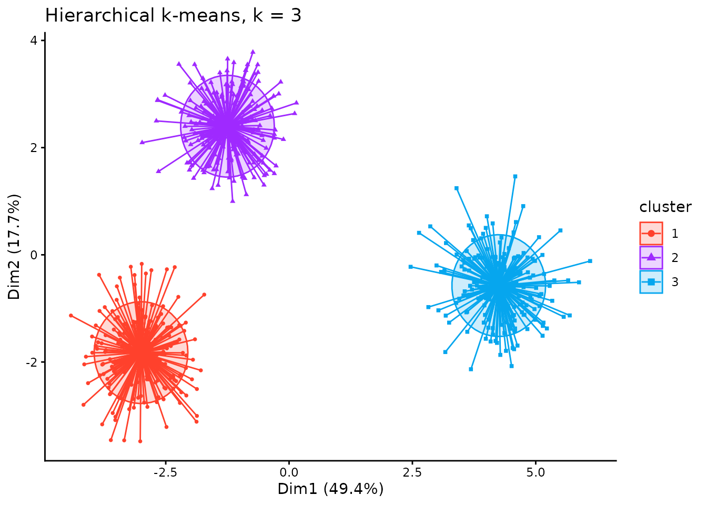
The heatmap shows the (standardized) answers of a random sample of respondents (rows), grouped by cluster, on all clustering variables (columns). Red stands for above-average and blue for below-average answers. With a clear structure, each cluster forms a block with its own pattern: here, each segment agrees with its “own” block of items.
cl_sim$plots$heatmap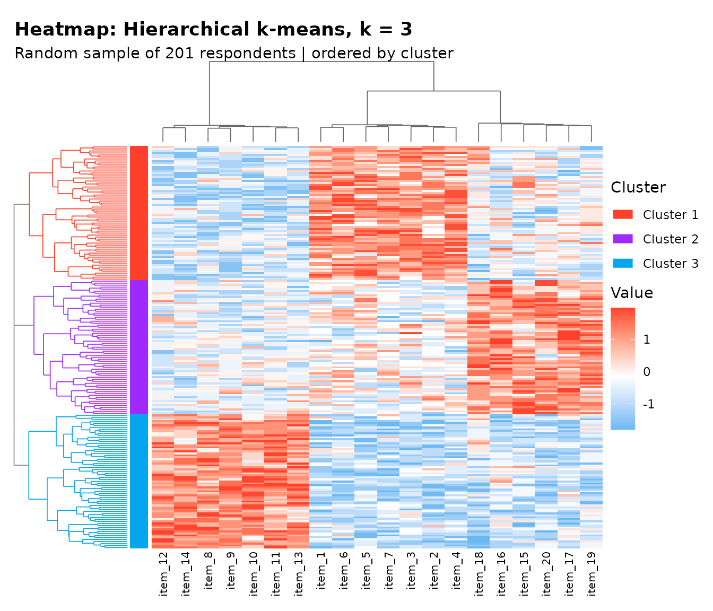
The cluster profiles summarize each cluster by its
centre, i.e. the mean of each clustering variable in the cluster
(cl_sim$centers), here on the z-standardized scale with the
total mean as dashed line. The profiles show the structure of the
simulated segments at a glance: each cluster scores clearly above
average on its own block of items and below average on the others.
Section 6 shows how to use this plot to interpret and name the
clusters.
cl_sim$plots$centers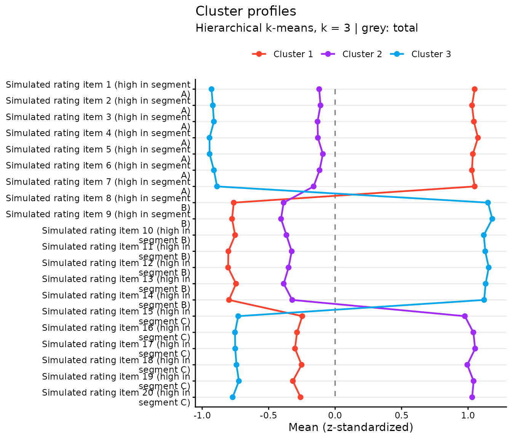
Example with real survey data: sm_synthetic
cl <- seg_cluster(prep, k = 4)
#>
#> ── Cluster solution: Hierarchical k-means, k = 4 ──
#>
#> • Cluster 1: n = 411 (29%)
#> • Cluster 2: n = 367 (26%)
#> • Cluster 3: n = 362 (26%)
#> • Cluster 4: n = 260 (19%)
#> Plots: `$plots$cluster`, `$plots$dend`, `$plots$heatmap`, and `$plots$centers`
cl$plots$cluster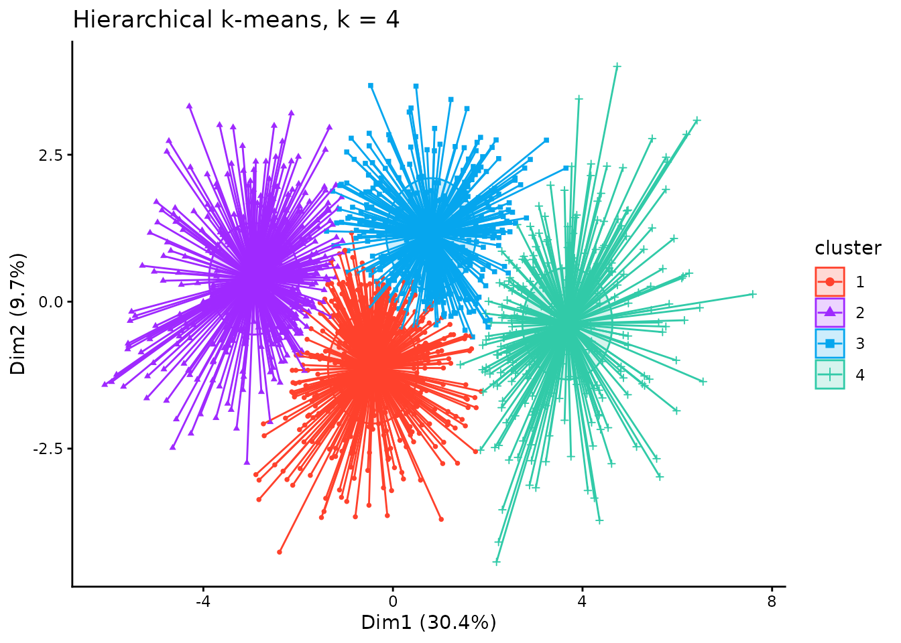
In contrast to sim_segments, the clusters overlap in the
cluster plot and form a continuous cloud. Keep in mind that the two
principal components only show part of the differences between
respondents (see the percentages in the axis labels), so clusters can
overlap in the plot even if they are better separated in the full
20-dimensional space. Whether that is the case is assessed in Section
5.
cl$plots$heatmap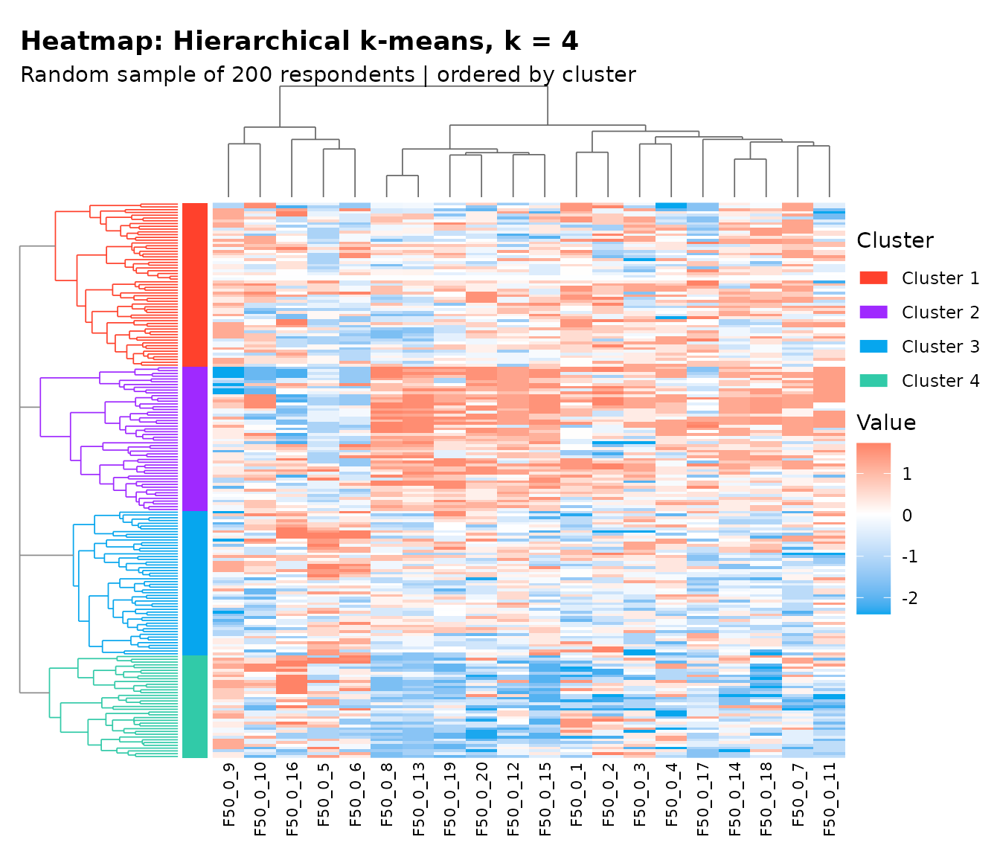
The heatmap shows patterns within the clusters as well, but they are
more blurred than in sim_segments: the clusters differ in
their tendencies, but there is considerable variation within
each cluster.
The dendrogram shows the tree of the hierarchical step, coloured by the final clusters. Long vertical lines before a merge indicate well separated clusters.
cl$plots$dend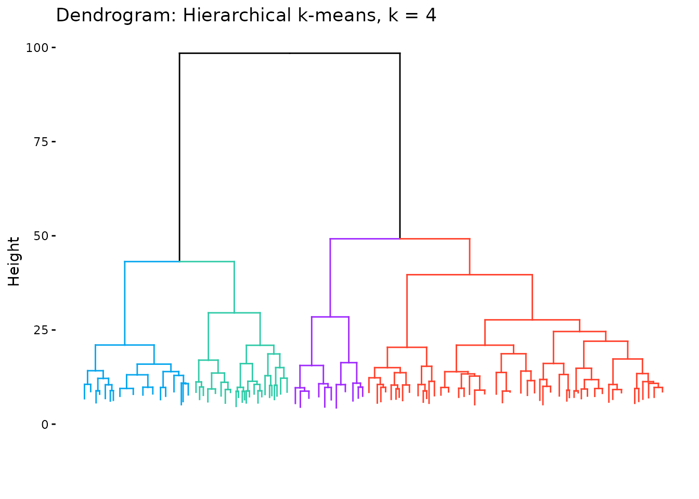
The most important results of the solution are:
cl$sizes # size and share of each cluster
#> # A tibble: 4 × 3
#> cluster n share
#> <int> <int> <dbl>
#> 1 1 411 0.294
#> 2 2 367 0.262
#> 3 3 362 0.259
#> 4 4 260 0.186
cl$centers # mean of each (standardized) clustering variable per cluster
#> # A tibble: 4 × 21
#> cluster F50_0_1 F50_0_2 F50_0_3 F50_0_4 F50_0_5 F50_0_6 F50_0_7 F50_0_8
#> <int> <dbl> <dbl> <dbl> <dbl> <dbl> <dbl> <dbl> <dbl>
#> 1 1 0.424 0.306 0.192 0.261 -0.411 -0.256 0.453 -0.184
#> 2 2 0.409 0.340 0.413 0.582 -0.309 -0.357 0.573 1.10
#> 3 3 -0.438 -0.298 -0.286 -0.417 0.684 0.459 -0.606 -0.0883
#> 4 4 -0.637 -0.550 -0.488 -0.654 0.134 0.270 -0.681 -1.14
#> # ℹ 12 more variables: F50_0_9 <dbl>, F50_0_10 <dbl>, F50_0_11 <dbl>,
#> # F50_0_12 <dbl>, F50_0_13 <dbl>, F50_0_14 <dbl>, F50_0_15 <dbl>,
#> # F50_0_16 <dbl>, F50_0_17 <dbl>, F50_0_18 <dbl>, F50_0_19 <dbl>,
#> # F50_0_20 <dbl>
cl$assignment # cluster of each respondent
#> # A tibble: 1,400 × 2
#> id cluster
#> <dbl> <int>
#> 1 1 1
#> 2 2 1
#> 3 3 4
#> 4 4 3
#> 5 5 3
#> 6 6 3
#> 7 7 2
#> 8 8 4
#> 9 9 1
#> 10 10 3
#> # ℹ 1,390 more rowsFurther functions to work with cluster solutions:
-
seg_cluster(prep, k = 2:6)computes several solutions at once (e.g.cl_set$solutions$k4), which is useful for comparing candidate solutions. -
seg_plot_cluster(),seg_plot_dend(),seg_plot_heatmap()andseg_plot_centers()re-create the plots with other settings, e.g.seg_plot_heatmap(cl, row_order = "dendrogram"). The settings can also be passed when clustering, e.g.seg_cluster(prep, k = 4, centers_args = list(type = "bars")). -
seg_as_cluster()converts an existing segmentation (e.g. from a previous wave) into the same format, so that it can be plotted, validated and profiled like a new solution.
Other algorithms and seg_compare_algorithms()
Besides hierarchical k-means, seg_cluster() supports
k-means, PAM (more robust to outliers, works with any distance measure),
hierarchical clustering (AGNES, DIANA), fuzzy clustering, model-based
clustering and density-based clustering (DBSCAN, HDBSCAN).
?seg_cluster contains an overview with recommendations on
when to use which method.
To get an overview of how different algorithms perform on your data,
seg_compare_algorithms() runs several algorithms for
several numbers of clusters and scores each solution with the validation
measures of the clValid package (Brock et al., 2008): connectivity,
silhouette width and Dunn index (validation = "internal"),
and optionally measures of stability when single clustering variables
are left out (validation = "stability", slow). The measures
are explained in ?seg_compare_algorithms.
algorithms <- seg_compare_algorithms(prep, cl_methods = c("hierarchical", "kmeans", "pam"), k = 2:6)
algorithms$plotAs with the number of clusters, the measures often disagree; use the comparison as a screening tool and validate the most promising solutions as described in the next section.
5. Cluster validation
Cluster validation answers the question: how good is a cluster solution? There are three types of validation (Kassambara, 2017):
- Internal validation uses only the clustering variables and the cluster assignment. It checks whether the clusters are compact (respondents in the same cluster are similar) and well separated (respondents in different clusters are dissimilar).
- External validation compares the solution with a known grouping, e.g. the true segments of simulated data or the segmentation of a previous wave.
- Relative validation compares the internal or external measures across different numbers of clusters or algorithms to choose the best solution.
seg_validation() covers all three types for one or
several solutions.
Internal validation measures
Silhouette width (Rousseeuw, 1987). For each respondent i, let ai be the average distance to the other members of its own cluster and bi the average distance to the members of the nearest other cluster (the neighbour). The silhouette width is
s_i = \frac{b_i - a_i}{\max(a_i, b_i)}
- si close to 1: the respondent is much closer to its own cluster than to the neighbour, i.e. well clustered.
- si around 0: the respondent lies between two clusters.
- si negative: the respondent is closer to the neighbour than to its own cluster, i.e. probably in the wrong cluster.
The average over all respondents is the silhouette coefficient, the most widely used single measure of cluster quality. Kaufman and Rousseeuw (1990) suggest the following interpretation:
| Silhouette coefficient | Interpretation |
|---|---|
| > 0.70 | strong structure |
| 0.51 to 0.70 | reasonable structure |
| 0.26 to 0.50 | weak structure, could be artificial |
| ≤ 0.25 | no substantial structure |
These thresholds are demanding for survey data with many variables: the more variables, the more similar the distances between all respondents become, which lowers the silhouette. For attitudinal survey data, values between 0.1 and 0.25 are common. Use the thresholds as an orientation, and above all to compare solutions on the same data.
Share of negative silhouette widths. The share of respondents that are probably in the wrong cluster. A few percent at the borders between neighbouring clusters are normal; a large share, especially within a single cluster, suggests that the cluster is not well defined (e.g. it should be merged with its neighbour).
Dunn index (Dunn, 1974). The smallest distance between two respondents in different clusters, divided by the largest distance between two respondents in the same cluster. Higher values are better. As it is based on a single minimum and a single maximum, it is very sensitive to outliers. There are no general thresholds; for survey data it is typically close to 0 and should only be used to compare solutions on the same data.
seg_validation() additionally returns further statistics
in $statistics (e.g. the Calinski-Harabasz index, the ratio
of the average within- to between-cluster distance), which are described
in ?seg_validation.
Example with a clear structure: sim_segments
We validate the solutions for k = 2 to 5. Plots are not needed for the cluster solutions themselves, which saves time:
cl_sim_set <- seg_cluster(prep_sim, k = 2:5, plots = FALSE, verbose = FALSE)
val_sim <- seg_validation(cl_sim_set)
#>
#> ── Cluster validation ──
#>
#> 4 solutions | distance: "euclidean"
#> • Hierarchical k-means, k = 2: silhouette = 0.42, Dunn = 0.490, negative
#> silhouette = 0%, smallest cluster = 33%
#> • Hierarchical k-means, k = 3: silhouette = 0.40, Dunn = 0.455, negative
#> silhouette = 0%, smallest cluster = 33%
#> • Hierarchical k-means, k = 4: silhouette = 0.25, Dunn = 0.290, negative
#> silhouette = 2%, smallest cluster = 15%
#> • Hierarchical k-means, k = 5: silhouette = 0.15, Dunn = 0.295, negative
#> silhouette = 2%, smallest cluster = 15%
#>
#> Best solution per measure
#> • Silhouette (higher = better): Hierarchical k-means, k = 2 (0.418)
#> • Dunn (higher = better): Hierarchical k-means, k = 2 (0.490)
#> • Negative silhouette (lower = better): Hierarchical k-means, k = 2 (0.000)
#> ℹ Highest silhouette coefficient 0.42: weak cluster structure (Kaufman & Rousseeuw).
#> Plots: `$plot (measures)`, `$plot_silhouette`, and `$plots`
val_sim$plot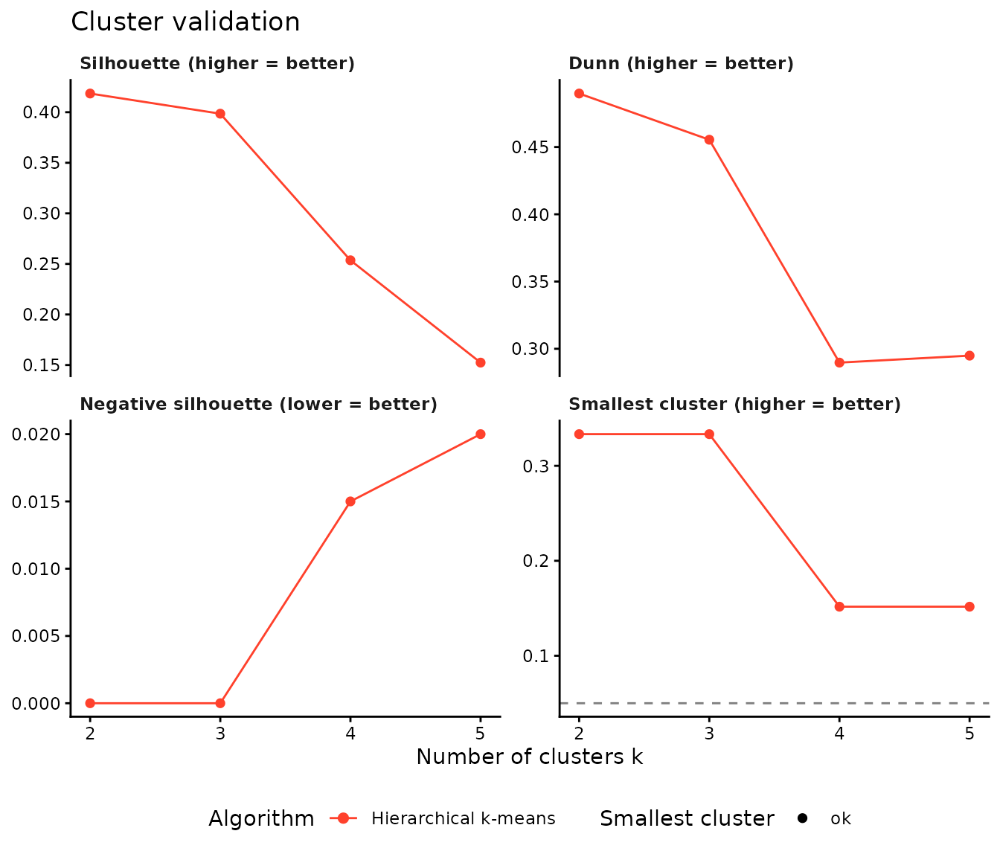
The plot shows each measure over the number of clusters, together with the share of the smallest cluster. The silhouette coefficient is about 0.4 for k = 2 and 3 (a “weak” structure according to Kaufman and Rousseeuw, although the segments are perfectly recovered; see the remark on many variables above) and drops sharply for k = 4 and 5. No respondent has a negative silhouette for k = 2 and 3.
The silhouette plot shows the silhouette width of each respondent, sorted by cluster. The dashed line is the silhouette coefficient. Good clusters have long bars that are similar within the cluster and no negative bars:
val_sim$plots$silhouette$`Hierarchical k-means, k = 3`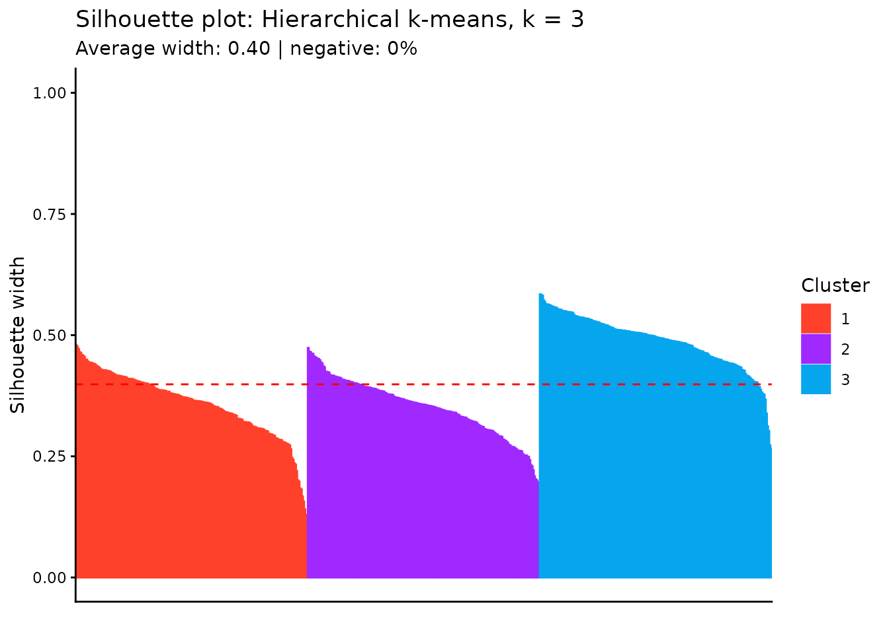
The silhouette plot of k = 4 shows what happens when there are more clusters than segments: one true segment is split into two clusters with silhouette widths close to 0.
val_sim$plots$silhouette$`Hierarchical k-means, k = 4`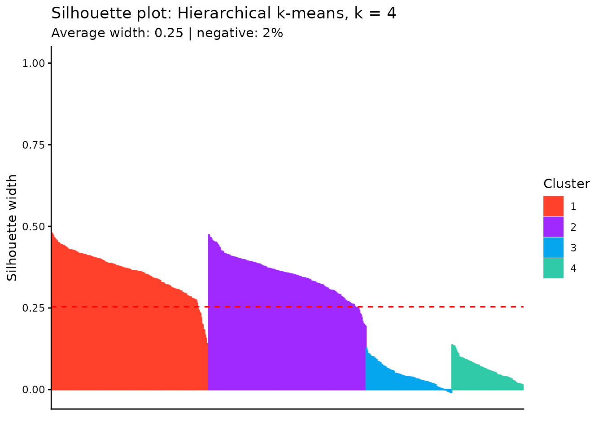
val_sim$cluster_silhouette |> filter(solution == "Hierarchical k-means, k = 4")
#> # A tibble: 4 × 5
#> solution cluster n avg_width negative_share
#> <chr> <int> <int> <dbl> <dbl>
#> 1 Hierarchical k-means, k = 4 1 200 0.358 0
#> 2 Hierarchical k-means, k = 4 2 200 0.350 0
#> 3 Hierarchical k-means, k = 4 3 109 0.0438 0.0826
#> 4 Hierarchical k-means, k = 4 4 91 0.0636 0Example with real survey data: sm_synthetic
val <- seg_validation(cl)
#>
#> ── Cluster validation ──
#>
#> 1 solution | distance: "euclidean"
#> • Hierarchical k-means, k = 4: silhouette = 0.09, Dunn = 0.092, negative
#> silhouette = 8%, smallest cluster = 19%
#> ℹ Highest silhouette coefficient 0.09: no substantial cluster structure (Kaufman & Rousseeuw).
#> Plots: `$plot (measures)`, `$plot_silhouette`, and `$plots`
val$cluster_silhouette
#> # A tibble: 4 × 5
#> solution cluster n avg_width negative_share
#> <chr> <int> <int> <dbl> <dbl>
#> 1 Hierarchical k-means, k = 4 1 411 0.0676 0.0681
#> 2 Hierarchical k-means, k = 4 2 367 0.133 0.00545
#> 3 Hierarchical k-means, k = 4 3 362 0.117 0
#> 4 Hierarchical k-means, k = 4 4 260 0.0438 0.323
val$plots$silhouette[[1]]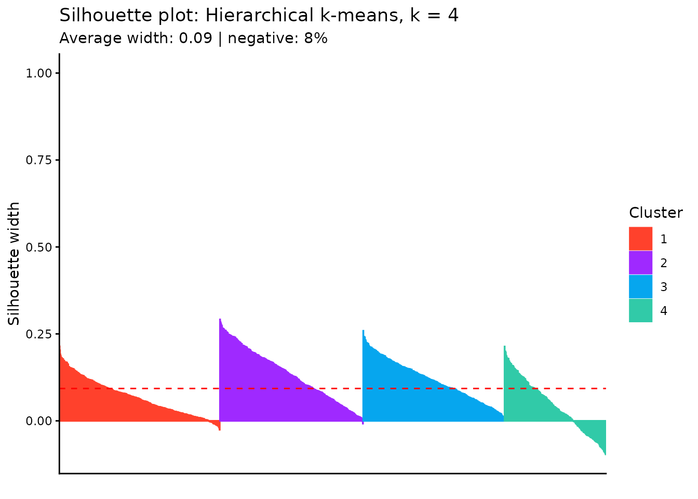
The silhouette coefficient of 0.09 confirms the impression from the
clustering tendency: there is no substantial cluster structure in the
sense of Kaufman and Rousseeuw. 8% of the respondents have a negative
silhouette width. The table per cluster shows that the clusters differ
in quality: cluster 4 has the lowest average silhouette width and the
largest share of negative silhouette widths, i.e. many of its members
are close to another cluster. To find out to which cluster these
respondents are close, look at the neighbor column in
val$silhouette:
val$silhouette[[1]] |>
filter(sil_width < 0) |>
count(cluster, neighbor)
#> # A tibble: 5 × 3
#> cluster neighbor n
#> <int> <int> <int>
#> 1 1 2 6
#> 2 1 3 22
#> 3 2 3 2
#> 4 4 1 18
#> 5 4 3 66To compare the candidate solutions, validate all of them together:
cl_set <- seg_cluster(prep, k = 2:6, plots = FALSE, verbose = FALSE)
val_set <- seg_validation(cl_set, external = "cluster_benchmark", silhouette_plots = FALSE)
#>
#> ── Cluster validation ──
#>
#> 5 solutions | distance: "euclidean" | external grouping: "cluster_benchmark"
#> • Hierarchical k-means, k = 2: silhouette = 0.17, Dunn = 0.120, negative
#> silhouette = 5%, smallest cluster = 44% | corrected Rand = 0.28, VI = 1.29
#> • Hierarchical k-means, k = 3: silhouette = 0.10, Dunn = 0.159, negative
#> silhouette = 8%, smallest cluster = 26% | corrected Rand = 0.46, VI = 1.17
#> • Hierarchical k-means, k = 4: silhouette = 0.09, Dunn = 0.092, negative
#> silhouette = 8%, smallest cluster = 19% | corrected Rand = 0.66, VI = 1.02
#> • Hierarchical k-means, k = 5: silhouette = 0.08, Dunn = 0.059, negative
#> silhouette = 10%, smallest cluster = 18% | corrected Rand = 0.51, VI = 1.34
#> • Hierarchical k-means, k = 6: silhouette = 0.07, Dunn = 0.092, negative
#> silhouette = 10%, smallest cluster = 10% | corrected Rand = 0.46, VI = 1.50
#>
#> Best solution per measure
#> • Silhouette (higher = better): Hierarchical k-means, k = 2 (0.169)
#> • Dunn (higher = better): Hierarchical k-means, k = 3 (0.159)
#> • Negative silhouette (lower = better): Hierarchical k-means, k = 2 (0.046)
#> • Corrected Rand (higher = better): Hierarchical k-means, k = 4 (0.657)
#> • VI (lower = better): Hierarchical k-means, k = 4 (1.025)
#> ℹ Highest silhouette coefficient 0.17: no substantial cluster structure (Kaufman & Rousseeuw).
#> Plots: `$plot (measures)` and `$plots`
val_set$summary
#> # A tibble: 5 × 11
#> method k solution n silhouette dunn negative_silhouette
#> <fct> <int> <chr> <int> <dbl> <dbl> <dbl>
#> 1 Hierarchical k-mea… 2 Hierarc… 1400 0.169 0.120 0.0457
#> 2 Hierarchical k-mea… 3 Hierarc… 1400 0.100 0.159 0.085
#> 3 Hierarchical k-mea… 4 Hierarc… 1400 0.0931 0.0917 0.0814
#> 4 Hierarchical k-mea… 5 Hierarc… 1400 0.0764 0.0590 0.104
#> 5 Hierarchical k-mea… 6 Hierarc… 1400 0.0744 0.0917 0.0993
#> # ℹ 4 more variables: smallest_share <dbl>, too_small <lgl>,
#> # corrected_rand <dbl>, vi <dbl>
val_set$plot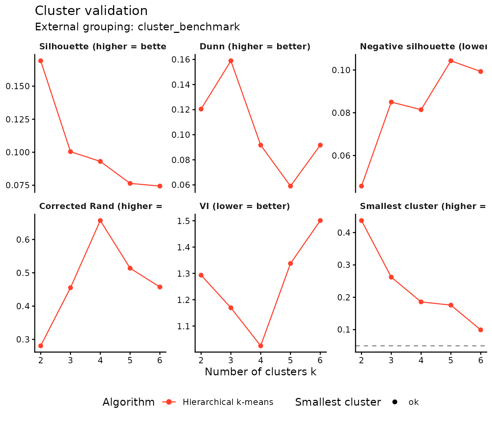
The internal measures favour k = 2 (highest silhouette
coefficient, fewest negative silhouette widths) and k = 3
(highest Dunn index). As discussed in Section 3, this is typical for
survey data and does not automatically make k = 2 the best
segmentation; the internal measures should be weighed against
interpretability and usefulness. With a weak structure, also check the
stability of the chosen solution, e.g. whether it is
similar with another algorithm
(seg_cluster(prep, method = "pam", k = 4)) or with another
imputation method, using the external measures below.
External validation
If a reference grouping is known,
seg_validation(external = ...) measures how well each
solution agrees with it. The reference can be a column of the original
data (as "cluster_benchmark" above), a vector, or another
cluster solution. The number of groups does not need to be the same.
- Corrected Rand index (Hubert & Arabie, 1985; also adjusted Rand index, ARI): considers all pairs of respondents and counts how often both groupings agree (both in the same group, or both in different groups), corrected for the agreement expected by chance. 1 = identical groupings, 0 = agreement at chance level. Steinley (2004) suggests: > 0.90 excellent, > 0.80 good, > 0.65 moderate, and ≤ 0.65 poor agreement.
- Meila’s variation of information (VI; Meila, 2007): an information-theoretic distance between the two groupings. 0 = identical groupings, higher values = less agreement. VI has no general thresholds and is used to compare solutions.
In sim_segments, the true segments are known:
val_sim_ext <- seg_validation(cl_sim_set, external = "segment", silhouette_plots = FALSE)
#>
#> ── Cluster validation ──
#>
#> 4 solutions | distance: "euclidean" | external grouping: "segment"
#> • Hierarchical k-means, k = 2: silhouette = 0.42, Dunn = 0.490, negative
#> silhouette = 0%, smallest cluster = 33% | corrected Rand = 0.57, VI = 0.46
#> • Hierarchical k-means, k = 3: silhouette = 0.40, Dunn = 0.455, negative
#> silhouette = 0%, smallest cluster = 33% | corrected Rand = 1.00, VI = 0.00
#> • Hierarchical k-means, k = 4: silhouette = 0.25, Dunn = 0.290, negative
#> silhouette = 2%, smallest cluster = 15% | corrected Rand = 0.87, VI = 0.23
#> • Hierarchical k-means, k = 5: silhouette = 0.15, Dunn = 0.295, negative
#> silhouette = 2%, smallest cluster = 15% | corrected Rand = 0.73, VI = 0.46
#>
#> Best solution per measure
#> • Silhouette (higher = better): Hierarchical k-means, k = 2 (0.418)
#> • Dunn (higher = better): Hierarchical k-means, k = 2 (0.490)
#> • Negative silhouette (lower = better): Hierarchical k-means, k = 2 (0.000)
#> • Corrected Rand (higher = better): Hierarchical k-means, k = 3 (1.000)
#> • VI (lower = better): Hierarchical k-means, k = 3 (0.000)
#> ℹ Highest silhouette coefficient 0.42: weak cluster structure (Kaufman & Rousseeuw).
#> Plots: `$plot (measures)` and `$plots`
val_sim_ext$summary |> select(solution, silhouette, corrected_rand, vi)
#> # A tibble: 4 × 4
#> solution silhouette corrected_rand vi
#> <chr> <dbl> <dbl> <dbl>
#> 1 Hierarchical k-means, k = 2 0.418 0.571 0.462
#> 2 Hierarchical k-means, k = 3 0.399 1 0
#> 3 Hierarchical k-means, k = 4 0.254 0.870 0.230
#> 4 Hierarchical k-means, k = 5 0.152 0.728 0.460The solution with k = 3 agrees perfectly with the true segments (corrected Rand index = 1, VI = 0). Note that k = 2 has a slightly higher silhouette coefficient but only a moderate agreement with the truth: the external validation confirms the elbow, the gap statistic and NbClust.
For sm_synthetic, the summary above
(val_set$summary) shows that k = 4 agrees best
with the four nutrition types of the original study, with a corrected
Rand index of 0.66 (moderate agreement according to Steinley, 2004). The
cross tabulation shows which new cluster corresponds to which original
segment:
val_set$crosstabs$`Hierarchical k-means, k = 4`
#> cluster_benchmark
#> Cluster Ausgewogener Omnivore Nachhaltig-Ökologischer Geniesser Pragmatiker
#> Cluster 1 339 25 33
#> Cluster 2 31 333 3
#> Cluster 3 35 12 302
#> Cluster 4 4 0 27
#> cluster_benchmark
#> Cluster Preisbewusster Carnivore
#> Cluster 1 14
#> Cluster 2 0
#> Cluster 3 13
#> Cluster 4 229Note that external validation is only possible if a meaningful reference grouping exists. A deviation from an earlier segmentation is not necessarily a flaw, e.g. if the clustering variables or the population have changed.
Agreement between algorithms
A robust segmentation should not depend too much on the choice of the
algorithm: if different algorithms with the same number of clusters
assign most respondents to the same clusters, the segments are more
likely to reflect a real structure. seg_agreement()
compares several solutions computed on the same prepared data. As
cluster numbers are arbitrary, it first matches the clusters of each
solution to those of a reference (the first solution), so that “cluster
2” stands for the same group of respondents in all solutions. For each
pair of solutions, it reports the share of respondents in
matched clusters (agreement), the corrected Rand index and
VI:
agr <- seg_agreement(list(
`Hierarchical k-means` = cl,
PAM = seg_cluster(prep, "pam", k = 4, plots = FALSE, verbose = FALSE),
Ward = seg_cluster(prep, "agnes", k = 4, plots = FALSE, verbose = FALSE)
))
#>
#> ── Agreement of 3 cluster solutions ──
#>
#> 1400 respondents | reference: "Hierarchical k-means"
#> • Hierarchical k-means vs. PAM: 70% agreement, corrected Rand = 0.41, VI = 1.29
#> • Hierarchical k-means vs. Ward: 68% agreement, corrected Rand = 0.33, VI =
#> 1.41
#> • PAM vs. Ward: 66% agreement, corrected Rand = 0.33, VI = 1.53
#> Same cluster in all solutions: 53% of the respondents
#> Results: `$pairwise`, `$respondents`, `$aligned`, `$crosstabs`, `$plot`
agr$plot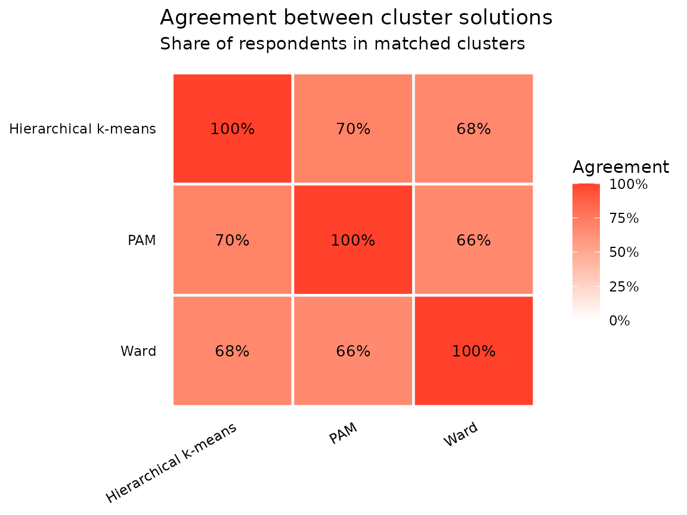
agr$crosstabs contains the cross tables of the matched
clusters with the reference, agr$respondents the matched
cluster of each respondent in each solution (e.g. to identify
respondents who switch between clusters), and agr$aligned
the renumbered solutions, whose cluster centres and profiles can be
compared directly. On weakly structured data such as
sm_synthetic, a substantial share of respondents typically
switches between neighbouring clusters, which is another sign that the
segments are tendencies rather than clearly separated groups.
6. Cluster interpretation
The last step is to understand and name the clusters: what characterizes the respondents of each cluster, and how do they differ from the others? This is done by comparing the clusters on
- the clustering variables, which define the clusters and are the basis for naming them, and
- profiling variables that were not used for clustering, e.g. sociodemographics, behaviour or brand KPIs, which show who the clusters are and how to reach them.
Cluster profiles
A first overview of the clustering variables is given by the
cluster profiles, which every solution includes as
plots$centers. They show the cluster centres
(cl$centers), i.e. the mean of each clustering variable per
cluster, with the total mean as dashed line:
cl$plots$centers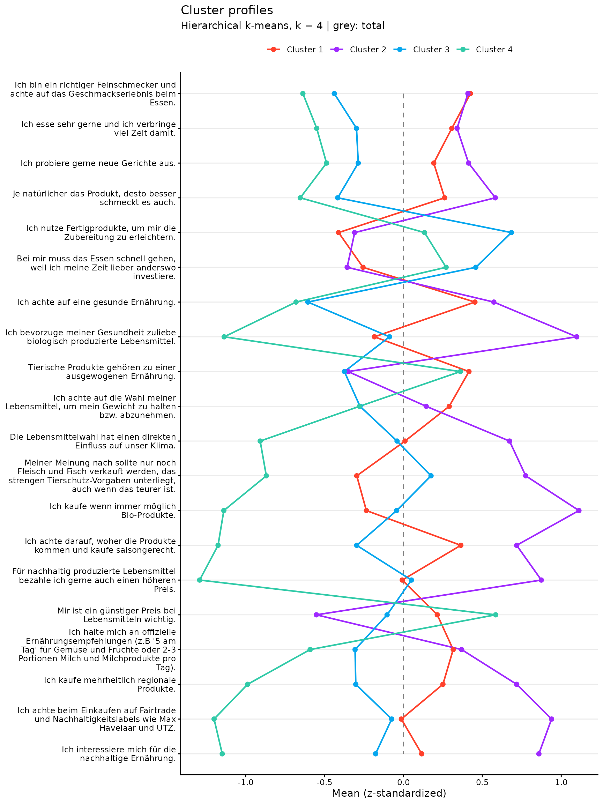
As the variables are z-standardized, the centres are expressed in
standard deviations from the overall mean: a value of 0.5 means that the
cluster scores half a standard deviation above the average. Following
Cohen (1988), deviations of about 0.2, 0.5 and 0.8 can be regarded as
small, medium and large. Compared to the profiles of
sim_segments (Section 4), the clusters differ less and on
more variables at once, but some clear patterns emerge, e.g. cluster 2
agrees more and cluster 4 less than average with most statements on
sustainability and organic food.
To name the clusters, it helps to look at each cluster separately and
to sort the variables by how much the clusters differ, so that the most
distinctive variables come first. seg_plot_centers()
re-creates the plot with other settings:
seg_plot_centers(cl, type = "bars", order = "difference")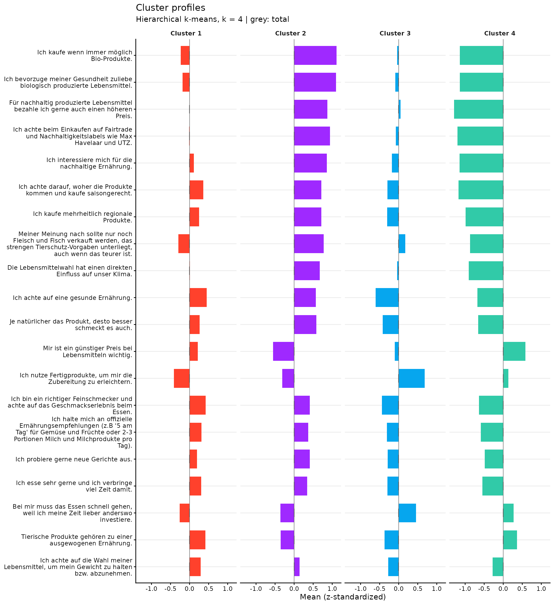
For reports, the means on the original answer scale (here 1-10) are often easier to communicate. The heatmap shows them as numbers, coloured by the difference to the total mean:
seg_plot_centers(cl, type = "heatmap", scale = "original")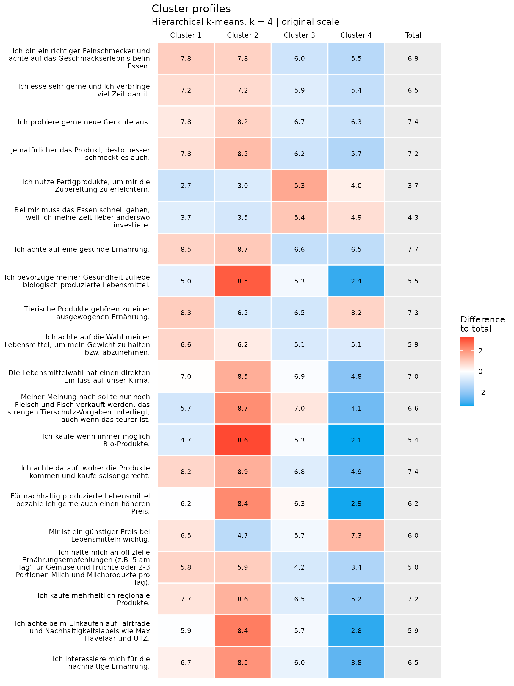
The cluster profiles are a quick overview of the clustering
variables. They do not show whether the differences are statistically
significant, do not use survey weights and do not cover profiling
variables. This is what the eda_ functions are for.
Detailed comparison with eda_explore() and the
eda_ functions
The easiest way to compare clusters in detail is
eda_explore(), an interactive app (Shiny gadget)
that opens in the viewer pane. Pass it a cluster solution, and every
solution is available as a grouping variable
(e.g. cluster_k4), together with all variables of the
original data:
eda_explore(cl) # a single solution
eda_explore(cl_set) # several solutions: compare cluster_k2 to cluster_k6In the app, you can select variables by name or label (e.g. a whole item battery), a grouping variable and a weight, and get:
- plots of the means or distributions per cluster, with markers for clusters that are significantly higher or lower than the total,
- descriptive statistics per cluster and tests of the differences between clusters,
- a detailed plot of a single variable with statistical tests,
- the R code to reproduce all results in a script.
The same functionality is available as functions for use in scripts
and reports, all of which accept a cluster solution as
data:
-
eda_plot(): plots of several variables by cluster, -
eda_describe(): descriptive statistics by cluster (means, confidence intervals, distributions), -
eda_test(): tests of the differences between the clusters, -
eda_plot_detail(): detailed plot of a single variable with statistical tests.
For example, the profile of the four clusters on the clustering variables, with triangles marking clusters that are significantly above or below the total:
eda_plot(
cl,
vars = starts_with("F50_0_"),
group = "cluster_k4",
show_sig = TRUE,
label_width = 45
)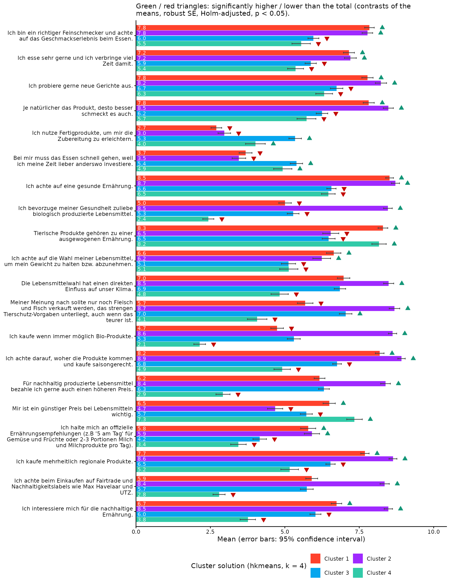
Reading such a plot item by item quickly leads to a description of each cluster. For example, cluster 2 agrees most with all statements about sustainability, organic food and animal welfare, whereas cluster 4 agrees least with them, but strongly with “Tierische Produkte gehören zu einer ausgewogenen Ernährung”, and attaches the most importance to low prices. Such patterns are the basis for naming the segments (here, they closely resemble the “Nachhaltig-Ökologischer Geniesser” and the “Preisbewusster Carnivore” of the original study).
And a description of the clusters by sociodemographics, weighted with the survey weight:
eda_describe(
cl,
vars = c("gender", "age_group", "region", "education"),
group = "cluster_k4",
weight = "weight",
total = TRUE,
test = TRUE
)Note that the clustering itself is unweighted (each respondent counts once when defining the segments), while the description of the segments can and usually should use the survey weights.
7. Assigning new respondents
Once a segmentation is established, it is often applied to
new respondents: a new survey wave, a booster sample or
a short screener in a later study. Re-running the cluster analysis on
the new data would produce new clusters that are not comparable to the
original ones. Instead, predict() assigns the new
respondents to the existing clusters.
The new data only needs to contain the original clustering variables
(the same columns as the data passed to seg_prep_data()).
It is prepared exactly like the original sample. Missing values are
handled with the same strategy, and the variables are rescaled with the
means and standard deviations of the original sample,
so that new respondents are compared with the original clusters on the
same scale. Each method then assigns the respondents in the way that is
consistent with how it formed the clusters, e.g. to the nearest cluster
centre for (hierarchical) k-means (see
?predict.seg_cluster).
For illustration, we treat the first 200 respondents of
sm_synthetic as a new wave:
new_wave <- sm_synthetic |> slice(1:200)
pred <- predict(cl, new_wave)
pred
#> # A tibble: 200 × 3
#> id cluster distance
#> <dbl> <int> <dbl>
#> 1 1 1 4.60
#> 2 2 1 3.29
#> 3 3 4 4.85
#> 4 4 3 3.69
#> 5 5 3 2.89
#> 6 6 3 3.77
#> 7 7 2 5.06
#> 8 8 4 3.94
#> 9 9 1 2.77
#> 10 10 3 4.39
#> # ℹ 190 more rowsThe result contains one row per new respondent, in the same order:
the identifier, the assigned cluster and the
distance to the centre of that cluster. Respondents who
cannot be assigned (e.g. because they answered none of the clustering
variables) get cluster = NA. Respondents with an unusually
large distance fit none of the clusters well and may deserve a closer
look.
As these respondents were part of the original sample, their predicted clusters agree with the original assignment:
pred |>
left_join(cl$assignment, by = "id", suffix = c("_predicted", "_original")) |>
count(cluster_predicted, cluster_original)
#> # A tibble: 4 × 3
#> cluster_predicted cluster_original n
#> <int> <int> <int>
#> 1 1 1 62
#> 2 2 2 45
#> 3 3 3 60
#> 4 4 4 33For fuzzy and model-based clustering, type = "prob" also
returns the membership probabilities of each respondent, which show how
clearly a respondent belongs to their cluster. For all methods,
rule = "knn" assigns respondents by a majority vote of
their nearest neighbours in the original sample, with the share of votes
per cluster as probabilities:
predict(cl, new_wave, rule = "knn", type = "prob")
#> # A tibble: 200 × 7
#> id cluster knn_share prob_cluster_1 prob_cluster_2 prob_cluster_3
#> <dbl> <int> <dbl> <dbl> <dbl> <dbl>
#> 1 1 1 0.6 0.6 0.4 0
#> 2 2 1 0.6 0.6 0.1 0.3
#> 3 3 4 0.7 0 0 0.3
#> 4 4 3 0.8 0 0.2 0.8
#> 5 5 1 0.6 0.6 0.1 0.3
#> 6 6 3 1 0 0 1
#> 7 7 2 0.9 0.1 0.9 0
#> 8 8 4 0.5 0.3 0 0.2
#> 9 9 1 0.9 0.9 0 0.1
#> 10 10 3 1 0 0 1
#> # ℹ 190 more rows
#> # ℹ 1 more variable: prob_cluster_4 <dbl>References
Bezdek, J. C., & Hathaway, R. J. (2002). VAT: A tool for visual assessment of (cluster) tendency. Proceedings of the 2002 International Joint Conference on Neural Networks, 2225-2230. https://doi.org/10.1109/IJCNN.2002.1007487
Brock, G., Pihur, V., Datta, S., & Datta, S. (2008). clValid: An R package for cluster validation. Journal of Statistical Software, 25(4), 1-22. https://doi.org/10.18637/jss.v025.i04
Charrad, M., Ghazzali, N., Boiteau, V., & Niknafs, A. (2014). NbClust: An R package for determining the relevant number of clusters in a data set. Journal of Statistical Software, 61(6), 1-36. https://doi.org/10.18637/jss.v061.i06
Cohen, J. (1988). Statistical power analysis for the behavioral sciences (2nd ed.). Lawrence Erlbaum.
Dolnicar, S., Grün, B., & Leisch, F. (2018). Market segmentation analysis: Understanding it, doing it, and making it useful. Springer. https://doi.org/10.1007/978-981-10-8818-6
Dunn, J. C. (1974). Well-separated clusters and optimal fuzzy partitions. Journal of Cybernetics, 4(1), 95-104. https://doi.org/10.1080/01969727408546059
Hartigan, J. A., & Wong, M. A. (1979). Algorithm AS 136: A k-means clustering algorithm. Journal of the Royal Statistical Society: Series C, 28(1), 100-108. https://doi.org/10.2307/2346830
Hopkins, B., & Skellam, J. G. (1954). A new method for determining the type of distribution of plant individuals. Annals of Botany, 18(2), 213-227. https://doi.org/10.1093/oxfordjournals.aob.a083391
Hubert, L., & Arabie, P. (1985). Comparing partitions. Journal of Classification, 2, 193-218. https://doi.org/10.1007/BF01908075
Kassambara, A. (2017). Practical guide to cluster analysis in R: Unsupervised machine learning. STHDA. See also https://www.datanovia.com/learn/machine-learning/clustering
Kaufman, L., & Rousseeuw, P. J. (1990). Finding groups in data: An introduction to cluster analysis. Wiley. https://doi.org/10.1002/9780470316801
Lawson, R. G., & Jurs, P. C. (1990). New index for clustering tendency and its application to chemical problems. Journal of Chemical Information and Computer Sciences, 30(1), 36-41. https://doi.org/10.1021/ci00065a010
MacQueen, J. (1967). Some methods for classification and analysis of multivariate observations. Proceedings of the Fifth Berkeley Symposium on Mathematical Statistics and Probability, 1, 281-297.
Meila, M. (2007). Comparing clusterings - an information based distance. Journal of Multivariate Analysis, 98(5), 873-895. https://doi.org/10.1016/j.jmva.2006.11.013
Rousseeuw, P. J. (1987). Silhouettes: A graphical aid to the interpretation and validation of cluster analysis. Journal of Computational and Applied Mathematics, 20, 53-65. https://doi.org/10.1016/0377-0427(87)90125-7
Schafer, J. L. (1999). Multiple imputation: A primer. Statistical Methods in Medical Research, 8(1), 3-15. https://doi.org/10.1177/096228029900800102
Steinley, D. (2004). Properties of the Hubert-Arabie adjusted Rand index. Psychological Methods, 9(3), 386-396. https://doi.org/10.1037/1082-989X.9.3.386
Thorndike, R. L. (1953). Who belongs in the family? Psychometrika, 18(4), 267-276. https://doi.org/10.1007/BF02289263
Tibshirani, R., Walther, G., & Hastie, T. (2001). Estimating the number of clusters in a data set via the gap statistic. Journal of the Royal Statistical Society: Series B, 63(2), 411-423. https://doi.org/10.1111/1467-9868.00293
Ward, J. H. (1963). Hierarchical grouping to optimize an objective function. Journal of the American Statistical Association, 58(301), 236-244. https://doi.org/10.1080/01621459.1963.10500845
Wright, K. (2022). Will the real Hopkins statistic please stand up? The R Journal, 14(3), 282-292. https://doi.org/10.32614/RJ-2022-055